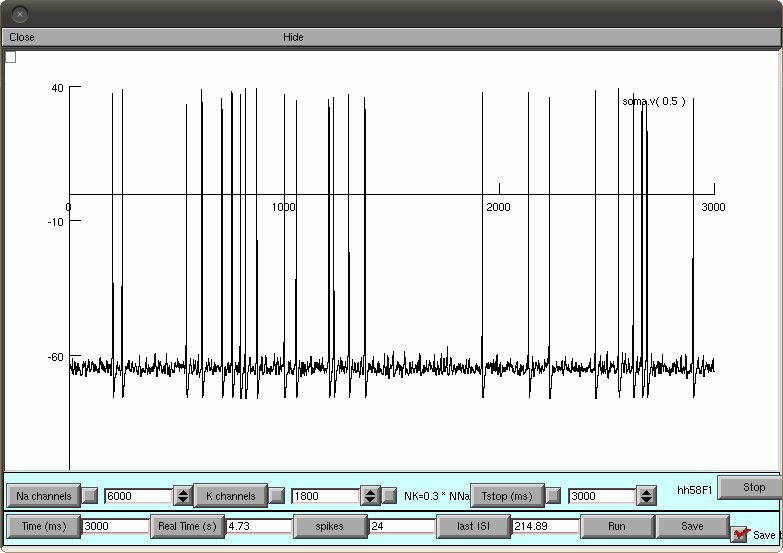

Files to reproduce the figures from: Orio P, Soudry D (2012) Simple, fast and accurate implementation of the diffusion approximation algorithm for stochastic ion channels with multiple States PLoS One 7(5):e36670 Vclamp folder: -------------- Scilab files to generate voltage clamp simulations with the K channel from H&H model. Figures 2, 3 and 10A - StochHH_K2 MC Vclamp.sci : MC modeling, uncoupled particles (2A) - StochHH_K2 DA Vclamp.sci : DA algorithm, uncoupled particles (2B) - StochHH_K2 DAss Vclamp.sci : DA with steady state app, uncoupled particles (3A) - StochHH_K2 Lss Vclamp.sci : Linaro et al. algorithm (10A) - StochHH_K5 MC Vclamp.sci : MC modeling, coupled particles (2C) - StochHH_K5 DA Vclamp.sci : DA algorithm, coupled particles (2D) - StochHH_K5 DAGss Vclamp.sci : Goldwyn DA algorithm, s.s app (10A) - StochHH_K5 DAss Vclamp.sci : DA with steady state app, coupled particles (3B) - StochHH_K5 DAG Vclamp.sci : Goldwyn DA algorithm, NO s.s app Rb model folder: ---------------- Scilab/Matlab files to generate simulations of the Rubinstein's mammalian Ranvier node model. Figures 4-6 and 10B. When run, each script will generate an output file with 4 columns: Stimulus amplitude, Firing Efficiency, Mean Firing Time and FT variance. The name of the file will indicate algorithm, number of channels, dt, and real time elapsed. - detRb 2vs8.sci: This will compare the deterministic version of the model with coupled and uncoupled particles (no output). - StochRb2 MC multi.sci: MC modeling, uncoupled particles - StochRb2 DA multi.sci: DA algorithm, uncoupled particles - StochRb2 DAss multi.sci: DA with steady state app, uncoupled particles - StochRb2 Lss multi.sci: Linaro et al. algorithm - StochRb8 MC multi.sci: MC modeling, coupled particles - StochRb8 DA multi.sci: DA algorithm, coupled particles - StochRb8 DAGss multi.sci: Goldwyn DA algorithm, s.s. app. - StochRb8 DAss multi.sci: DA with steady state app, coupled particles - StochRb8 DAG multi.sci: Goldwyn DA algorithm, NO s.s. app. HH model folder: ---------------- Neuron files to run the stochastic H&H models (figure 7-9). Compile the supplied .mod files and run mosinit.hoc with nrngui. A prompt window will appear to chose the simulation algorithm and the type of simulation. If the default configuration of a DA model with coupled particles is selected (click accept), and run is pressed, the simulation should produce a graph similar to Figure 5 top right:  Some Matlab files are also provided.